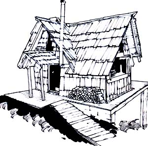
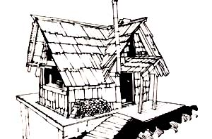

"Shucks. Puttin up your own house ain't hard at all. What's hard is figuring out and conforming to all those @#$ cents&* building codes and regulations. "
I successfull owner-builder of his own house
Take heart, all you would-be and actual fabricators of do-it-yourself shelter. At last someone (good old MOTHER) has commissioned a series of articles designed to help you meet-and beat!-those most troublesome of all obstacles in the construction of your own home:
THE BUILDING REGULATIONS.
The series of informative pieces (the first of which appears below) was written by Ed Vitale, an attorney who specialized in real estate and building construction during most of his ten years of private practice. So read on as Ed [1] investigates in detail the four major model building codes used in this country, especially as they apply to the activities of the owner-builder, [2] gives you concrete explanations and examples of "how to read the code", [3] reviews the statutory and administrative framework of the construction and sanitary codes of four representative states, and [4] generally lays down criticism, comments, and plain good help for anyone contemplating the construction of his or her own shelter.
Building regulations (those amorphous, contradictory, dictatorial, and highly technical governmental edicts) and the building inspector (the physical embodiment of the construction establishment) are part of the harsh realities that the "new pioneer" of American society (the homesteader, back and/or owner-builder) must face.
The individual self-builder generally feels that he or she should have the right to do what he or she wants with his or her land ... to build the shelter he or she desires ... and to use entirely different materials from those used in the fabrication of his or her neighbor's house. But building regulations-in solidifying the status quo of construction technology and housing aesthetics-often do not permit this basic freedom'.
The right to build your own dwelling according to your own desires, then, is the major area in which alternate, ecological, and simpler lifestyles run head-on into the energy-consuming, resource-wasting, creature-comforted majority of our society and hit construction contractors, labor unions, and building material producers right in the breadbasket.
(Yes, there are sections of the country that don't have building or health codes yet, but as the movement of people from the large metropolitan areas to the rural countryside increases, can even more building regulations be far behind?)
How harsh a reality are these construction regulations? Ask the people who've innocently started (or completed) a self-built dwelling ... only to have the building inspector "red tag" the structure for demolition because it does not conform with the local code. Ask the owner-builders in Mendocino County, California (the United Stand group whose story was excerpted in MOTHER NO. 39, page 100) about their long and continuing fight against the sometimes unreasonable regulations imposed upon Golden State rural self-builders.
Or look at the contradictions of a building code that in one locality seems to allow Karen and Tom's yurt while denying Ken and Katie the right to build a log cabin ... or the municipality in Virginia where Jim's 50-foot windplant tower (built to help meet his energy needs) violates the code whereas Joanne erected the same tower in a town in Nebraska with the building inspector's approval ... or the county that allows Jan and George to build a house from scrounged materials while Terry and Laurel's barn converted-into-a-home in a neighboring county is posted as being uninhabitable.
The sad fact of the matter is that there are currently some 5,000 different building codes in effect throughout the U.S. and they vary from state to state, county to county, and town to town. Worse yet, none of the regulations are geared to the needs of the energy-saving, resource-recycling, low-income self-builder.
On the other hand, it is this author's contention-after a careful study of the problem-that anyone who has the vigor, temperament, creativity, and willingness to build his home (and that's everyone who puts his mind to it) can also apply those traits to deal favorably with building codes and inspectors. Why? Because [1] building officials are not nearly as knowledgeable in "code reading" (though very well informed about construction techniques) as one is led to believe, and [2] a person with a good, sound understanding of a building code frequently can talk himself into exemptions to, and variances from, the code that the building inspector would not have thought of.
So instead of just saying that building regulations are confusing, complicated, and must be dealt with, this series of articles will lead you through the regulatory maze ... clarifying (as well as possible under the circumstances) an admittedly hazy, fuzzy, and maddening area of the law. These articles won't provide specific answers, but they will give every one of you who've been bitten by the do-it-yourself construction bug-no matter where you live in this country-a knowledge of the complications you'll face, an insight into the reading and understanding of the codes you're most likely to confront, and an approach to finding practical, legal, administrative (and maybe even political) solutions to your problems.
The laws that govern the planning and construction of your shelter are many and varied. Throughout this series of articles, however, all the applicable laws frequently will be referred to as "building regulations", "regulations", "building codes", or "codes". Remember, though, that within these more general references there is a housing code which is different from a building code which is different from a health code, etc. Bear in mind, too, that a specific provision of, say, the housing code may overlap or contradict a specific provision of the building code, and so on.
Let us begin, then, by defining the different codes. The explanations are presented here in the form of a narrative checklist (including some background and editorializing to put the terms in their proper perspective) of the points an owner-builder should consider as he prepares to buy a piece of property on which to construct his own shelter. (A few of these laws have less impact on the rural self-builder than others, but an understanding of the various regulations-and the differences between them-can put you just one step further along toward the successful completion of your own building.)
ZONING ORDINANCES. The first consideration that an owner-builder must contemplate when he buys a piece of land is whether the local zoning ordinance (if any) allows the property to be used for the construction and occupancy of a single-family dwelling.
A zoning code is an ordinance adopted by a municipality or county that divides a town or county into different land use classifications. Certain sections of a city, for example, may be designated as business, industrial, and various kinds of residential zones (from single family up to and including high-rise multi-family). A single-family dwelling can't be built in an industrial zone (without going through an expensive, time consuming, and not always successful variance procedure) just as you wouldn't be allowed to put a factory in the middle of a residential district.
(Legally, it's the state, through its constitution or by virtue of a statute adopted pursuant to its police powers, which authorizes-though does not compel-a municipality or county to enact a zoning ordinance. The local or county government which desires to pass such an ordinance can then divide its land into different use classifications. These classifications must be reasonable-that is, the zoned use must bear some relationship to the uses that already exist in a district-or else the ordinance is unconstitutional.)
Zoning laws may seem to be a rather severe intrusion on the individual's right to develop his property as he sees fit, but this kind of governmental regulation of private property was constitutionally sanctioned by the Supreme Court of the United States back in the mid-'20's. Thus the government's right to dictate, to a limited degree, the use you and I make of our land has been firmly established in our jurisprudence.
Besides regulating land use, zoning ordinances also specify a minimum lot size for each different use, how far a building must be located from the front, rear, and sides of the property on which it sits, and the height of the structure. (These provisions are sometimes known as bulk requirements.) Some ordinances even try to legislate aesthetics . . . how buildings should look! It is these bulk requirements-in part-that have helped perpetuate a conformity that has stifled creative approaches to shelter construction.
Some of the bulk requirements found in the zoning law at times conflict with the area requirements that a municipality may have adopted in its building or housing codes. Local governments are notorious for not reviewing their different ordinances for such inconsistencies and, if you've done your homework, you might use these differences to your advantage.
The homesteader, farmer, or rural owner-builder will not be confronted with zoning ordinances to a large degree since such land use laws are generally found only in metropolitan and suburban areas and not-at least not yet!-in places where there has been no significant population growth. If you're building your own shelter near a big city, however, watch out! You may not be able to construct that home you want to put up on the vacant property you bought in the middle of the heavy industrial zone.
The municipal clerk of the town in which the property you intend to buy is located can tell you if a zoning ordinance has been adopted by the municipality or county. If such a code is in effect, I would advise you to purchase your own copy of the regulations (at a cost, probably, of anywhere from $1.00 to $5.00) and read it. Being familiar with and understanding the zoning ordinance is a good start on learning to read (and understand) the building code that is probably also in effect.
SUBDIVISION ORDINANCES. These laws regulate the division of land. (Example: the carving out of 250 individual lots from one 100-acre farm.) If no such ordinance has been adopted by a county, municipality, or other governing body any division of land within the jurisdiction in question can take place without governmental approval. Also, whenever you purchase all the property in one particular tract that a seller owns, then the subdivision ordinance-even if one is in effect-is, of no concern since there is no division of land. But if you contemplate buying only 10 acres of a 100-acre parcel and there is such an ordinance, you have a hurdle to overcome . . . BEFORE you purchase the property, much less start to build a structure on it.
(Like zoning, each municipality within a state has the option of whether or not to adopt a subdivision ordinance ... and not all of them do. Again, the areas experiencing the most population growth are the ones most likely to adopt such an ordinance in an attempt to prevent haphazard development.)
Let's say that a subdivision ordinance is in effect in an area in which you want to buy a portion of a seller's property. It is very likely that, before the land can be divided and sold, the planning board or subdivision committee (or whatever name the ordinance uses to designate the governmental body empowered to pass on subdivisions) must review the proposal. The body will probably ask for a sketch (possibly even a professionally engineered survey) that outlines the manner in which the property is being divided and which shows any other improvements that might be required under the ordinance. The planning board will then review the sketch against the criteria set forth in the ordinance and, if all requirements have been complied with, the subdivision will be approved. The property can then be divided and sold.
In some states, a division of property into less than a designated number of lots (usually three or four) and which involves no new street construction for access is classified a minor subdivision and no public hearing is required. A major subdivision (one that involves the creation of more than three or four lots and/or the construction of access roads) imposes both a public hearing on the subdivider and the requirement that he submit much more complicated engineering documentation to the governing board.
CAUTION: Don't think you've avoided the subdivision problem by signing an agreement with a rural landowner that allows you to erect your dwelling on a portion of his land (on which there are three or four owner-builders doing the same thing) without actually purchasing the property. There are usually prohibitions-tucked away in the fine print of either a subdivision or zoning ordinance-against more than one primary use of a piece of property under one ownership.
Again, the town clerk knows if a subdivision ordinance is in effect. If one has been adopted for the area in which you want to build, purchase the ordinance and read it. Surprise! You just may find you'll be able to argue that your subdivision is exempt under the terms of the ordinance!
BUILDING CODES. These are the regulations that specify how-and of what materials-a building must be constructed. Unfortunately, some owner-builders don't bother finding out about the existence of these regulations until after they've purchased a piece of property. If you have very definite plans in mind for your shelter, make sure that it can be built in the municipality or county where you contemplate the purchase of land BEFORE you buy that land. Otherwise, you may have to change your construction plans to conform to the code that governs the property you've bought.
Lest this seem horribly arbitrary and unfair, perhaps a quick review of how building codes have developed over the years will put the present situation into a more honest perspective.
Cities on the North American Continent began to adopt building codes even before the revolution that birthed this country. The regulations grew out of a real need to protect city-dwellers from fire, wind, snow, floods, earthquakes, overcrowding ... and sheer unsafe construction. Some codes outlawed thatch roofs and a few even prohibited wooden construction (in municipalities where fire was especially feared).
Building codes started to proliferate to the then-rural areas of this country about the turn of the century when a group of insurance companies-in the bes t tradition of American enterprise-promulgated a model building code in an attempt to stop its losses from fires. Thus, the National Building Code-still with us today-came into being.
At about the same time, building officials were banding together in different sections of the country and drafting their own model codes. The International Conference of Building Officials issued the Uniform Building Code (which still predominates in the western part of the country) and the Building Officials and Code Administrators International wrote the Basic Building Code (prevalent in the Midwest and East). The Southern Building Code Conference, unhappy with the way the other three groups addressed themselves to the unique problems of that part of the nation, drafted still a fourth model . . . the Standard Building Code.
These organizations have, over the years, broken down the whole construction process into a number of individual components-plumbing, mechanical (heat and air conditioning), fire prevention, etc.... and issued a separate set of regulations for each one. The main building code itself in each case, however, is still the basic construction document that guides a contractor in the erection of everything from a single-family dwelling to high-rise buildings and huge shopping centers.
And that's the problem: the attempt of each major code to cover so many different kinds of construction (not only the high-rises and shopping centers mentioned above, but also farm buildings and factories) in a single document. This has resulted in a general building code (not including the separate plumbing, mechanical, and other codes) that is hundreds of pages long and so tightly crammed with charts, graphs, formulas, and equations that only an engineer can decipher it. This, of course, puts the owner-builder who wants to construct his own simple dwelling at a decided disadvantage.
There has been, however, an attempt to solve this particular dilemma of the builder of residential dwellings. All four model code organizations have collaborated to produce the "One and Two Family Dwelling Code". Its title is self-explanatory and it combines those provisions of the plumbing and mechanical codes that are applicable to single-family residential construction. (The main building codes themselves do not contain plumbing and mechanical specifications, As indicated above, such regulations have been relegated to their very own volumes.)
The chapters of the One and Two Family Dwelling Code are presented in a logical construction sequence and the manual is therefore much easier to follow than any of its four bigger brothers (the National, Uniform, Basic, and Standard Building Codes). This code, however, is compatible with the other four and is an excellent reference and instruction book if you're considering the construction of your own shelter in a code-dominated municipality. The manual costs $8.00 and is available from Building Officials and Code Administrators Int'l. Inc., 1313 East 60th Street, Chicago, Illinois 60637; American Insurance Association, 85 John Street, New York, New York 10038; Southern Building Code Congress International, 3617 Eighth Avenue South, Birmingham, Alabama 35222; or International Conference of Building Officials, 5360 South Workman Mill Road, Whittier, California 90601.
Bear in mind that all of the codes discussed above remain nothing more than mere models (without force and effect) unless and until they've been adopted by either a state, county, or municipal government (which are the only entities that have the legal power to regulate building construction). Furthermore, the municipality (or county, or state) may [1] adopt an entire model code as written, [2] pass part of a model code and substitute its own requirements for certain specific sections, [3] draft its own construction (or plumbing, or mechanical) code, or [4] not adopt any code at all.
I hope that you can now understand how and why construction codes differ from town to town, county to county, and state to state. And, although I do not ask you to understand it, I hope you can see how the one really positive accomplishment made by the code organizations-the promulgation of the One and Two Family Dwelling Code-is completely negated by the fact that each group has failed to remove from their voluminous building codes those specific provisions relating to single-family residential construction. Thus, many jurisdictions-which adopt one of the model building codes and do not adopt the model One and Two Family Dwelling Code-still force the owner-builder to do battle with the bigger and more complicated code.
Enough said at this point. The next article in this series will cover the model codes in detail and will specifically explain how to apply for a building permit, the role of the building inspector, and whether or not certain kinds of shelters that an owner-builder might want to construct are permitted under the four model codes.
HOUSING CODES. These ordinances generally regulate the living conditions in dwelling units after they're built. The regulations set minimum requirements for water, heating, and sanitary facilities.
Housing codes were enacted in response to the deplorable living conditions that the flood of European immigration during the 1800's produced in U.S. cities. Many city dwellers at the time were lodged in overcrowded, unhealthful death traps and these codes were adopted to provide a minimum of protection for the helpless tenant (fire escapes, toilets for every 20 occupants, tap water on each floor, and bannisters for the stairways were some of the early standards required of multi-family-dwelling owners).
Even though you may not think that a housing code can concern an owner-builder, it, unfortunately, can. For, over the years, the provisions of these regulations have increasingly been applied to the single-family dwelling as well. This creates serious problems for the owner-builder who doesn't want electricity, who has a wooden sink or tub, or who sleeps in a detached structure ... all of which might be illegal under a housing code.
These difficulties are further compounded by the overlaps and inconsistencies that sometimes develop between the specific provisions of the housing code and the regulations contained in the building code. Therefore, it is important for the owner-builder to determine if a housing code is in effect in the jurisdiction in which he contemplates the purchase of land and determine if its provisions are applicable to the house he intends to construct.
SANITATION (OR HEALTH) CODES. These are the regulations which govern the disposal of human waste and "gray water" (the colloquial name given the water in which clothes, dishes, and humans have been washed). The same concerns for health and the prevention of disease that gave rise to building and housing codes, also produced these sanitation laws. The solutions to the waste and waste water problems-as they have been adopted in most, if not all, of the health codes found in this country-are simple: you must [1] tie into an existing governmentally operated sanitary sewer system (generally not found in the rural countryside), or [2] install a private septic tank/leach field disposal system.
It's this simplicity that causes serious problems for the owner-builder, since the cost of installing a septic system is, many times, more expensive than the low-cost dwelling the self-builder wants to erect. And the alternatives-such as out-houses and composting privies-are unreasonably prohibited (legally) and unrealistically repulsive to most people's sanitary sensibilities.
The owner-builder will probably come into contact with these antiquated health provisions more often than he runs afoul of building codes since more jurisdictions (even rural ones) have adopted laws requiring septic tanks than have enacted building requirements.
These health laws generally state that you must obtain a health permit before you start the construction of a dwelling. This means that you have to show the local or county health department that the land in which you intend to maintain your leach field has the proper absorption qualities and that the septic/leach field system is large enough to handle the load that your house will put on it.
So: Before you buy, investigate the absorption qualities of the land you intend to purchase. This examination of the property-all by itself-may tell you whether or not you can build your dream shelter on it. (An in-depth review of the present status of health codes and alternative solutions to the septic tank will be presented in a future article in this series.)
ELECTRICAL CODES. If you-as a rural self-builder-intended to have electricity in your dwelling, you must be aware of the existence of the National Electrical Code. Believe it or not, it's the only code in existence in the United States that governs the use of electrical equipment (although, when adopted by a local government, the code may be changed somewhat to serve the needs, tastes, and whims of the drafting board).
The issue of whether an owner-builder is permitted to do his own wiring is the subject of local determination. The National Electrical Code is silent on the matter. Some municipalities allow self-builders and homeowners to do their own wiring, others permit do-it-yourselfers to perform such work but impose a considerable fee for the privilege, and still others prohibit anyone but licensed electricians from doing the job.
Like everything else we've discussed so far, you should thoroughly investigate this subject and how it's handled in the municipality where you intend to build ... before you purchase the piece of property on which you hope to put up your owner-built house.
|
 |
 |
|